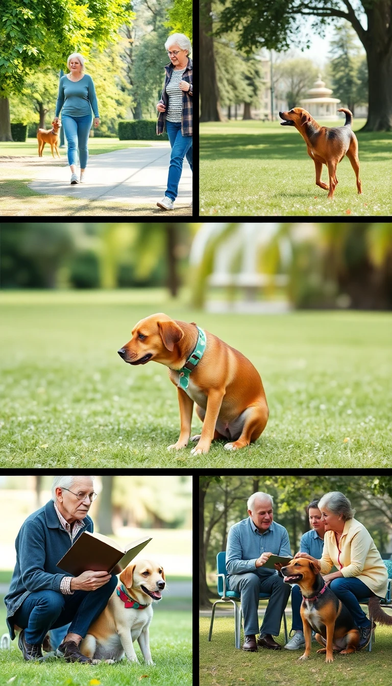

There's something magical about coming home to a wagging tail and an eager face at the door—a faithful friend who's always delighted to see you. For seniors entering their golden years, dog ownership offers far more than just companionship; it provides a wealth of physical, emotional, and social benefits that can significantly enhance quality of life. As retirement unfolds with its unique blend of freedom and adjustment, a four-legged friend might be just the perfect addition to your new chapter.
Physical Health: Getting Moving with a Furry Motivator
One of the most significant challenges in retirement can be maintaining an active lifestyle. Dogs, with their natural enthusiasm for walks and play, become built-in exercise partners. Studies consistently show that dog owners walk an average of 22 minutes more per day than non-dog owners—adding up to 2,760 extra steps daily.
"My Corgi, Pepper, gets me out of the house rain or shine," shares 72-year-old Robert Jenkins. "Before him, I might go days without leaving my apartment. Now we have our morning route through the park, and I've met half the neighborhood!"
This regular, moderate exercise contributes to improved cardiovascular health, better joint mobility, and enhanced balance—all crucial for preventing falls and maintaining independence. The American Heart Association has even acknowledged the connection between dog ownership and reduced blood pressure and cholesterol levels.

Dogs encourage seniors to stay active and social through walking, playing, and community engagement.
Emotional Wellbeing: The Heart-to-Heart Connection
Beyond physical health, dogs provide extraordinary emotional support. The retirement transition can sometimes bring feelings of purposelessness or isolation. Dogs counter these challenges beautifully by providing structure, routine, and unconditional love.
The simple act of caring for another living being creates a sense of purpose and responsibility. Dogs need feeding, grooming, exercise, and attention—establishing a daily rhythm that helps maintain mental well-being. Their non-judgmental presence offers comfort during difficult times and celebration during joyful ones.
Research has demonstrated that interacting with dogs increases levels of oxytocin (often called the "love hormone") while reducing cortisol (the stress hormone). This biochemical boost can help alleviate symptoms of depression and anxiety—conditions that affect many seniors adjusting to life changes.
Social Connections: Building Community One Walk at a Time
"I used to walk around the park and barely nod at strangers," says 68-year-old Margaret Chen. "Since adopting Bella, I've made four close friends just from our regular encounters on the walking path. Dogs are conversation starters on four legs!"
Margaret's experience reflects a common phenomenon among dog owners. Dogs naturally facilitate social interaction, creating opportunities for conversation and connection. For seniors who may be experiencing shrinking social circles due to retirement, relocation, or loss, these new connections can be invaluable.
Dog parks, training classes, and even veterinary waiting rooms become venues for meaningful human interaction. Additionally, the online communities centered around specific breeds or dog activities provide another avenue for social engagement and friendship.
Cognitive Benefits: Keeping Minds Active and Alert
Caring for a dog engages the brain in multiple ways. From remembering feeding schedules to learning about canine health and behavior, dog ownership provides ongoing mental stimulation. Training activities, in particular, create cognitive challenges that keep minds sharp and engaged.
Studies suggest that the combination of physical activity, reduced stress, and mental engagement associated with dog ownership may even help reduce the risk of cognitive decline and dementia. The consistent interaction with a responsive companion encourages communication and presence—keeping seniors mentally alert and emotionally attuned.
Finding Your Perfect Match: Considerations for Senior Dog Owners
While the benefits of dog ownership are clear, finding the right canine companion requires thoughtful consideration. Energy level, size, temperament, and health needs vary tremendously across breeds and individual dogs.
Many seniors find success with adult or senior dogs who have settled energy levels and established personalities. Smaller breeds may be easier to manage physically, though temperament matters more than size. Local shelters often have wonderful older dogs seeking homes, and many rescue organizations specifically facilitate senior-to-senior adoptions, matching older dogs with older adults.
It's also wise to consider future care arrangements for your pet. Having a plan in place for your dog's care if your circumstances change provides peace of mind and ensures your companion will always be looked after.
A Partnership of Joy and Purpose
Dog ownership in the senior years isn't simply about having a pet—it's about forming a mutually beneficial partnership that enriches both lives. Your dog receives a loving home and devoted care; you receive a loyal friend who provides structure, encourages activity, facilitates connections, and offers unwavering companionship.
As 75-year-old William Thompson puts it, "My Daisy doesn't care about my age or my arthritis. She sees me at my best every day. That kind of unconditional acceptance is rare at any stage of life, but especially precious in the later years."
Whether you're a lifelong dog lover or considering your first canine companion, the golden years might be the perfect time to experience the unique joy that comes from sharing your life with a dog. The wagging tails, wet noses, and faithful hearts of our canine friends offer a special kind of magic that makes every day brighter—no matter what age you are.